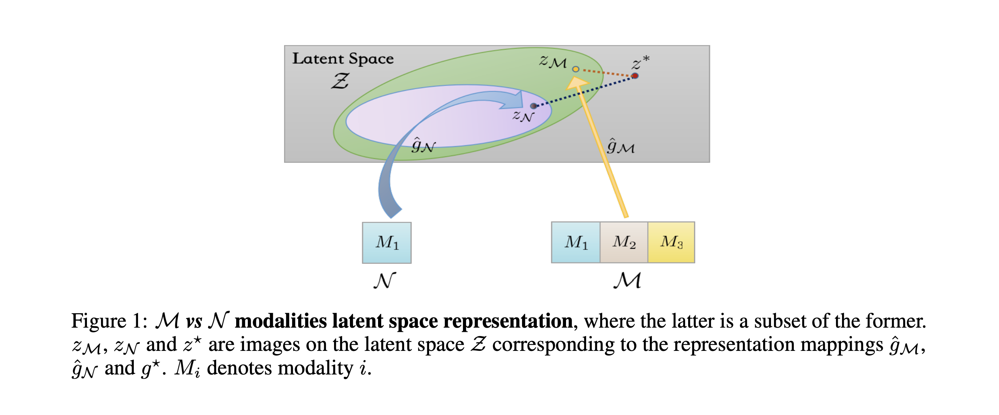
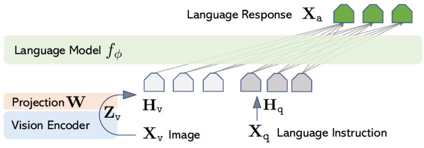
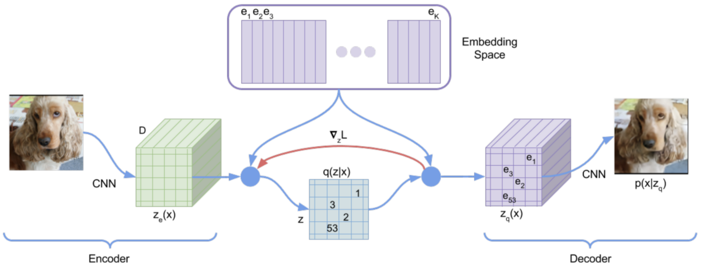
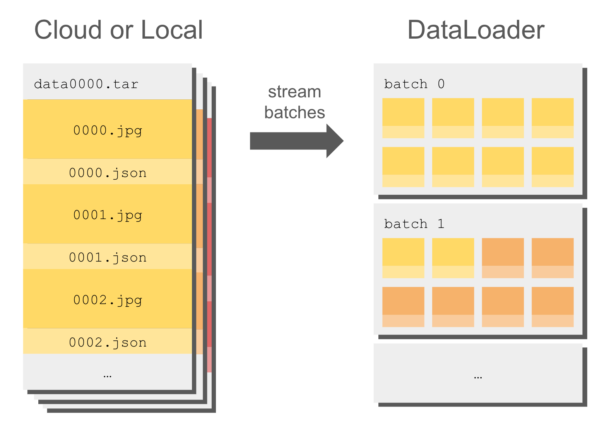
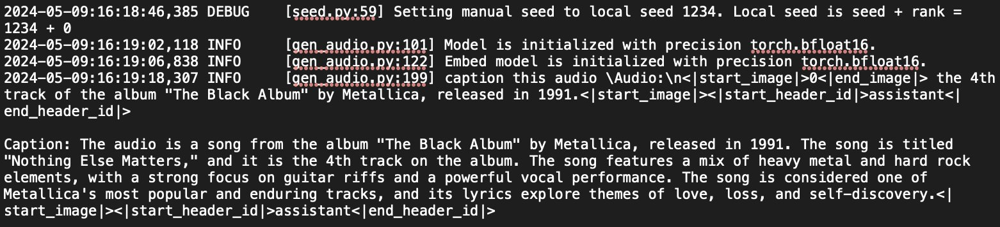
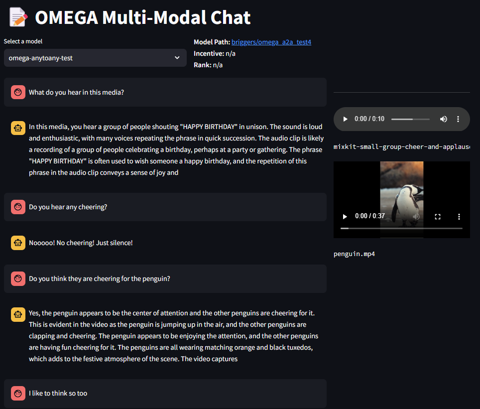
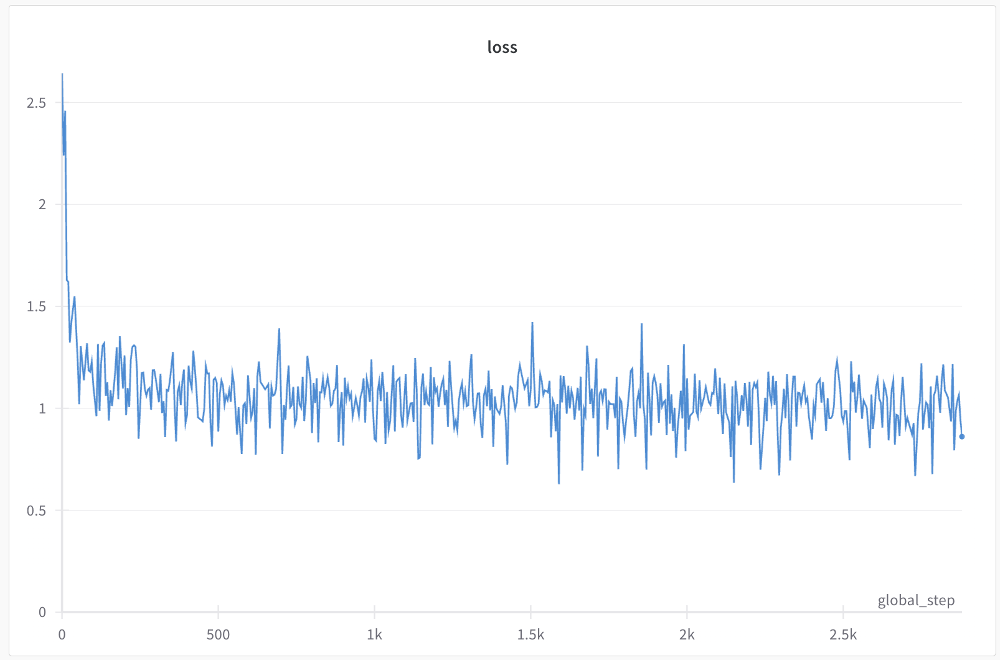
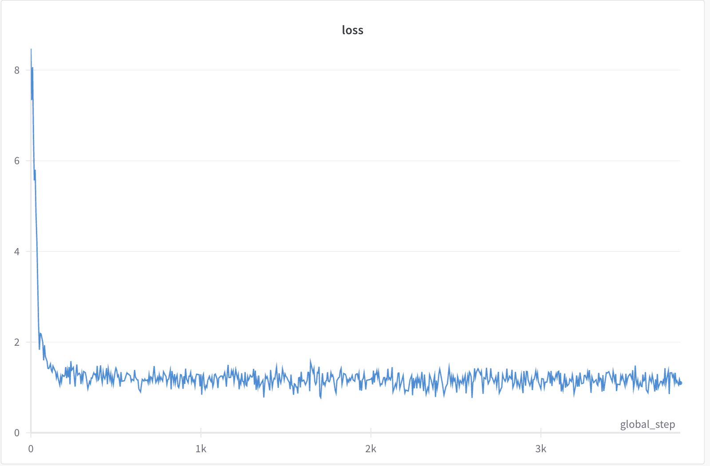
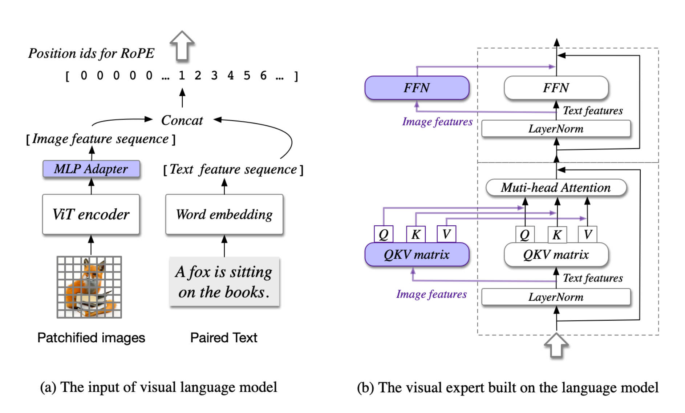

TLDR: We achieve competitive results in multimodal AI using late fusion techniques, training an 8B parameter model on a single 8xH100 cluster, outperforming larger open-source models across various benchmarks
Want to just see our experimental code: check it out here!
(figure one will be this graphi with our evals, visual comparing with late fusion vs early fusion + evals )
I spent a good chunk of summer at Omega Labs helping them kickoff their experiments with multimodal artificial intelligence — from creating datasets, setting up training code, and doing the runs
A big issue I found while doing this is the lack of resources and libraries. Between the dozens of training and eval libraries and optimizations being researched — there seems to be a "late" focus on developing good tools for training multimodal intelligence
So, I tried to make it my goal this summer to both have some code (which I will talk about at the end) and writing (this) to address an issue I got pretty deep into
Hope you enjoy!
Machine learning, particularly deep learning, has made remarkable progress in recent years. Many of the most successful and widely-used models focus on single modalities:
While these single modality models excel in their specific domains, they are limited to processing and understanding only one type of data input. They are trained for the purposes of a specific "pipeline"
It can become easy to see the number of "pipeline permutations" we have grows fast. If we consider only 3 main modalities — text, audio, and video (images can be one frame of video...), that means we would need $3*3=9$ state-of-the-art models in each modality to have tools to cover all possible pipelines
Multimodal models are individual models that cover all of these pipelines, so they win in terms of application-efficiency
This is a great question! I feel like our intuition says "yes" because humans are naturally "multimodal" so we should model our models off that. But a proof that's more robust is one presented by the Institute for Interdisciplinary Information Sciences et. al in this paper
Suppose we have a machine learning task that involves data from multiple different modalities - for example, images, text, and audio. We can choose to train an encoder using all of these modalities (a multimodal model), or we can select a subset of the available modalities using just that reduced set of inputs (a uni-modal model)
Formally, the paper defines a "latent representation function" $\hat{g}$ that maps the raw input data into a common latent space
The crucial finding is that $\hat{g}_M$ (our multimodal model) will be closer to the true underlying latent space $g^*$ compared to $\hat{g}_N$ (our uni-modal model). This improved "latent representation quality" is what allows the multimodal model to achieve lower population risk - a measure of the model's expected error or loss on the overall data distribution, not just the training set
The intuition is that by leveraging the complementary information contained across the multiple data modalities, the multimodal model can learn a more comprehensive and accurate representation of the latent structure inherent in the data. This latent space is the foundation upon which the final task-specific mapping is built, so having a higher quality latent representation translates directly to better end-to-end performance
A natural question to have is if training multiple modalities is more cost-efficient?
I have not come across any formal literature to prove this, but in this scaling laws paper by FAIR — training on speech and text modalities together at 30B scale is somehow better than training 2 separate 30B models on each domain. You can say this also applies to existing multimodal models like GPT-4V, LlaVA, and others
The big point here is how multimodal is a very elegant next-step in existing models. From what we've discussed about "higher-quality" latents and also scaling, there is no reason to incorporate more mixed data and shared latent representations in generative models (which transformers dominate right now)
How do we do that? There are currently two main methods — both of which I've experimented with over the summer
Late fusion multimodal models consist of:
A common version of this is training a projection layers for each modalities encoders for a pre-trained transformer
Take a look at LlaVA's architecture, the $W$ projection part is trained to take an image $X_V$ that gets encoded by encoder $Zv$ (this can be any embedding model ex. CLIP), so that the language model $f{\phi}$ understands it
I'll talk more about the actual application of these methods in the Experiments section
Early fusion, on the other hand, combines the different modalities at the input level or very early in the network architecture. The process typically involves:
The reason this is called "early" compare to late is that we are learning each modality within the model "earlier" than just making a general model we can encode several modalities to "later"
With transformers (again) we would typically approach early fusion by modifying the tokenization and embedding process to handle multiple modalities simultaneously
The key advantage of this early fusion approach is that it allows the model to learn cross-modal relationships from the ground up. The transformer can potentially discover complex interactions between modalities that might be missed in a late fusion approach
This could be a whole article on its own, and that is not a bad thing! The research on this topic is extremely interesting, and also — in my opinion — very early
The backbone behind much of the research, and existing models (Chameleon by Meta, Gemini, and probably GPT-4o) tokenizers are Vector Quantized Variational Autoencoders (VQ-VAE)
VAEs are a type of generative model that learn to compress high-dimensional data into a lower-dimensional latent space. They consist of two main components:
This objective encourages the model to learn a compact, meaningful latent representation while still being able to reconstruct the input data accurately
VQ-VAEs build upon the VAE framework but introduce a crucial modification: discrete latent variables. Here's how they work:
Codebooks are a key component of VQ-VAEs. A codebook is essentially a dictionary of learned vector representations, also known as "codes" or "embeddings". Each code in the codebook represents a prototype or archetype of a particular feature or pattern in the data. During the forward pass, the continuous output of the encoder is matched to its nearest neighbor in the codebook, effectively discretizing the latent space
Training the codebook is an integral part of the VQ-VAE learning process. The codebook vectors are updated using an exponential moving average of the encoder outputs assigned to them. This allows the codebook to adapt to the data distribution over time
If you are wondering what the final tokens look like, they are just the indexes of each codebook vector used
It makes sense why this is called "Vector Quantized" now. We use vectors within our codebook to discretize latents into integers, so we can use them as tokens
The first point is obvious: their discrete latent space naturally aligns with tokenization. But a more elegant reason is how they sidestep the posterior collapse problem that plagues standard VAEs. By quantizing the latent space, VQ-VAEs force the model to use these discrete codes meaningfully, ensuring that the latent representation captures important features of the input data
A starting point for all experiments was forking torchtune and modifying Llama3's architecture. The existing fine-tuning support is amazing — the PyTorch team really carries this industry on their backs
All of our experiments use the instruct Llama3-8B on half-precision, with runs only using a single 8xH100 node. We do a whole fine-tune of all the Llama3 weights using LoRA — we found LoRA cheaper + faster than QLoRA
We did training runs for both late fusion and early fusion
We achieve competitive state-of-the-art results to similar-sized open-source models
We mostly relied on converting existing image, audio, text, and video datasets into a common conversation format that we could do orchestration on
If you check out my hugging face you'll see a bunch of datasets prefixed with "mm" that have been converted to do that
Something we tried was using WebDataset + GCP object store as to not have to download these datasets to our machines disks all the time
Streaming helps with this
Object store storage is also cheaper than machine disk storage
Standard Object Storage: Suitable for frequently accessed data
Standard Persistent Disk: Suitable for general-purpose workoads.
WebDataset also lets you easily store encoded versions of image, audio, and video. A common mistake I ran into was decoding the media when doing processing on it, and pushing that. You'll end up with super bloated datasets
It is easy to convert existing huggingface datasets to WebDataset format though
import webdataset as wds
import io
import json
def write_to_webdataset(dataset, output_path, samples_per_shard=10000):
with wds.ShardWriter(output_path, maxcount=samples_per_shard) as sink:
for i, sample in enumerate(dataset):
# Convert sample to WebDataset format
key = f"{i:08d}"
# Assuming 'image' and 'label' are fields in your dataset
# Adjust these based on your actual dataset structure
image_bytes = io.BytesIO()
sample['image'].save(image_bytes, format='PNG')
sink.write({
f"{key}.png": image_bytes.getvalue(),
f"{key}.json": json.dumps({"label": sample['label']})
})
We made a pretty clean system to just wrap all these datasets using a round robin scheduler
class RoundRobinDataset(IterableDataset):
def __init__(self, datasets, tokenizer, world_size=1, rank=0, perception_tokens=1, **kwargs):
self._ds_cfg = datasets
self._tokenizer = tokenizer
self._world_size = world_size
self._rank = rank
self._perception_tokens = perception_tokens
self._kwargs = kwargs
self._reset_datasets()
self._len = reduce(add, self._ds_lengths)
def _reset_datasets(self):
self._datasets = [
instantiate(
cfg,
tokenizer=self._tokenizer,
world_size=self._world_size,
rank=self._rank,
perception_tokens=self._perception_tokens,
**self._kwargs
)
for cfg in self._ds_cfg
]
self._ds_indexes = [0 for d in self._datasets]
self._ds_lengths = [len(ds) for ds in self._datasets]
def __len__(self):
return self._len
def __iter__(self):
return self
def __next__(self):
if not self._datasets:
self._reset_datasets()
raise StopIteration()
# take next sample from ds with lowest progression
_, next_ds_idx = sorted([
(ds_idx / ds_len, i)
for i, (ds_idx, ds_len)
in enumerate(zip(self._ds_indexes, self._ds_lengths))
])[0]
try:
sample = next(self._datasets[next_ds_idx])
self._ds_indexes[next_ds_idx] += 1
return sample
except StopIteration:
del self._datasets[next_ds_idx], self._ds_indexes[next_ds_idx], self._ds_lengths[next_ds_idx]
return next(self)
We decided to wrap the existing token embeddings with a new layer:
llama3.tok_embeddings = MMEmbedding(llama3.tok_embeddings)
For now, MMEmbedding is just an interface:
class MMEmbedding(nn.Module):
def __init__(self):
super().__init__()
def set_input_context(self, mm_context):
raise NotImplementedError()
def forward(self, tokens):
raise NotImplementedError()
For late-fusion, we created MMProjectionEmbedding to use a
projection layer that converts image embeddings set in an "input
context" to Llama embeddings:
class MMProjectionEmbedding(MMEmbedding):
def __init__(self, perception_tokens, embedding_dim, embed_keys, output_dim):
super().__init__()
self._perception_tokens = perception_tokens
self._embedding_dim = embedding_dim
self._embed_keys = embed_keys
self._context = []
dim_out = output_dim if self._perception_tokens == 257 else output_dim * self._perception_tokens
self.proj_to_llama = nn.Sequential(
nn.Linear(self._embedding_dim, dim_out),
nn.GELU(),
nn.LayerNorm(dim_out),
nn.Linear(dim_out, dim_out),
)
def set_input_context(self, mm_context):
self._context = [
{s: torch.cat([embed[k] for k in self._embed_keys], dim=-1)
for s, embed in context_dict.items()}
for context_dict in mm_context
]
def forward(self, tokens: Tensor, h: Tensor) -> Tensor:
for b, context_dict in enumerate(self._context):
for s, embed in context_dict.items():
llama_embed = self.proj_to_llama(embed)
llama_embed = llama_embed.view(self._perception_tokens, -1)
h[b, s:s+self._perception_tokens] = llama_embed[:h.size(1)-s]
return h
This approach means multimedia inputs don't get explicitly positionally encoded in the sequence by Llama's RoPE. It's not a big issue since multimedia data usually appears at the end or beginning of sequences. Including more interleaved data helps mitigate this
We chose to use ImageBind by Meta for late fusion training, as it's a native multimodal embedding model. We ran an experiment training solely on image data, then using embeddings in our model's forward audio pass. The theory was that the projection layer trained on ImageBind image layers would also learn audio and video, since ImageBind embeddings share a common latent space
This turned out to be true! We achieved this using about 10 million text-image pairs, which demonstrates why multimodal training is provably better
The same thing worked w/ videos + audio
This is trained only on 100 million samples for less than 3k steps! We use GCP (startup credits!) and do training runs on a single 8xH100 cluster for about 3 days. On Lambda Labs @ $2.99 / GPU / hr, this would less than $2000 — for pretty good results
| Category | Ours (8B) | Qwen-VL (7B) | Claude 3.5 Sonnet |
|---|---|---|---|
| RealWorldQA | 44.1% | 37.8% | 60.1% |
| MMMU | 29.8% | 29.6% | 65.9% |
| AI2D | 54.5% | 57.7% | 80.2% |
| MathVista | 19.3% | 15.5% | 61.6% |
(zero-shot — source https://huggingface.co/spaces/opencompass/open_vlm_leaderboard)
We keep up with Qwen-VL who are also leaders in the open source space!
lmms-eval is a library identical to the EleutherAI llm-eval-harness— but for multimodal evals
Using it on your own model is relatively simple — just wrap your model in their inference class
They have a pretty robust list of tasks to try out, and you can also implement your own tasks
We extend MMEmbedding now. We also leverage pre-trained
models from the
the original VQ-GAN paper
to utilize VQ-VAEs
class MMVQVAEEmbedding(MMEmbedding):
def __init__(self, vocab_size, perception_tokens, output_dim):
super().__init__()
self._embedding = nn.Embedding(num_embeddings=vocab_size, embedding_dim=output_dim)
self._perception_tokens = perception_tokens
self._context = []
self._embed_keys = ["vqvae"]
def set_input_context(self, mm_context):
param = next(self.parameters())
device, dtype = param.device, torch.long
self._context = [
{
s: torch.cat([embed[k] for k in self._embed_keys]).to(device, dtype)
for s, embed in context_dict.items()
}
for context_dict in mm_context
]
def forward(self, tokens: Tensor, h: Tensor) -> Tensor:
for b, context_dict in enumerate(self._context):
# then by sequence idx
for s, vae_tokens in context_dict.items():
# and then must be transformed from tokens -> llama3 dim
llama_embed = self._embedding(vae_tokens)[:h.size(1) - s]
h[b, s:s+self._perception_tokens] = llama_embed
return h
We have a new embedding table that takes in the VQ-VAE codebook ids to llama3's embedding dim
| Category | Ours (8B) | Qwen-VL (7B) | Claude 3.5 Sonnet |
|---|---|---|---|
| RealWorldQA | 25.4% | 37.8% | 60.1% |
| MMMU | 20.2% | 29.6% | 65.9% |
| AI2D | 31.1% | 57.7% | 80.2% |
| MathVista | 5.3% | 15.5% | 61.6% |
When comparing the evals, late-fusion comes out superior. But it's not reasonable to rule out early-fusion as a method completely yet
Late Fusion Loss
Early Fusion Loss
A big reason why the early fusion model is doing worse is because of how we've artificially increased the vocab size of our model — these parameters we need to "re-learn" are much more abundant than the projection layer parameters learned in the late fusion method
How does the loss graph reflect this?
The early fusion loss graph exhibits a sharper initial drop followed by a more volatile and higher loss throughout the training. This volatility can be attributed to the larger parameter space created by the increased vocabulary size, which complicates the learning process. The model struggles to optimize these additional parameters, leading to the observed instability
This just means that there is more learning to be done by early fusion models though, which is a good thing!
The larger parameter space means the model is not just learning isolated representations of each modality but is also learning to cross-communicate between them. This cross-learning through interleaved data can lead to richer and more nuanced representations of the input, potentially capturing intricate relationships between modalities that late fusion might miss
This will require bigger training runs with more data — which we did not test out (yet!)
Google & CMU have done some work on using VQ VAEs + 3D CNNs to create video tokenizers — which when used in transformers do better on image + video generation than diffusion. They dub that "Tokenizer Is Key to Visual Generation"
The two-key things that makes their tokenizer so good is using a huge vocabulary size with small embedding sizes — what they dub "lookup-free quantization" (LFQ) — and a joint image-video architecture that can effectively tokenize both images and videos using a shared codebook
There is so much room for more experimentation here:
These are some out of the many ideas that me and PBwould brainstorm about
A very easy thing to add to make late fusion better is having separate attention and feed-forward layers for the other multimodal features (which are separated from the text features)
We trained on everything using the same attentions heads because of how we though there would be cross-learning when using mixed text + image data — but adding these new parameters would ensure the model is learning from each modality independently before integrating the information
If you made it to the end, thanks! If you had any other questions about this article, do not hesitate to reach out to my email or twitter. If you think this work is interesting, Omega Labs is hiring for full-time research engineers. I'd be happy to refer anyone who pings me — including any Waterloo students looking for a next co-op
Additionally, I am looking for work either for Winter 2025 or Summer 2025. You can learn about me more on my website, but if you or your organization is working on problems that require doing training infrastructure, scaling data jobs, or anything you think I align with — ping me as well!
Cheers!